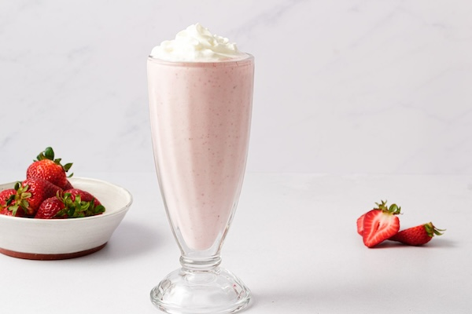

Strawberry Milkshake
Prep time:
10 mins
Yield:
4
INGREDIENTS:
8 ounces strawberries, stemmed and sliced
½ teaspoon vanilla extract
1 pint vanilla ice cream
¼ cup milk
Canned fresh cream
STEPS:
Blend 4 ounces of strawberries, ¼ tsp. of vanilla, 1 cup of ice cream, and 2 tbsp. of milk in a blender until smooth.
Pour into 2 glasses. Repeat with the remaining strawberries, vanilla, ice cream and milk.
Top with canned fresh cream and serve immediately.